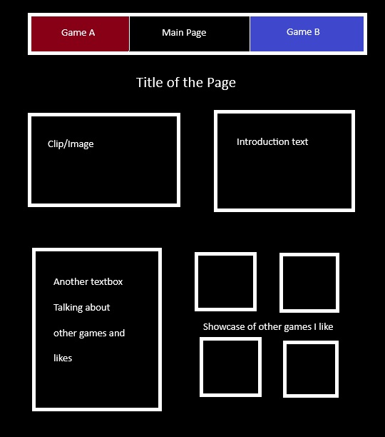
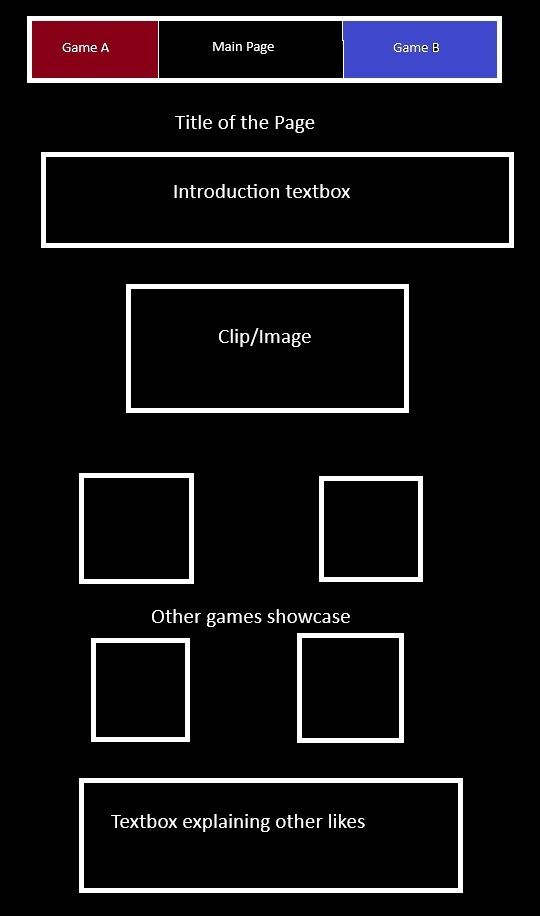
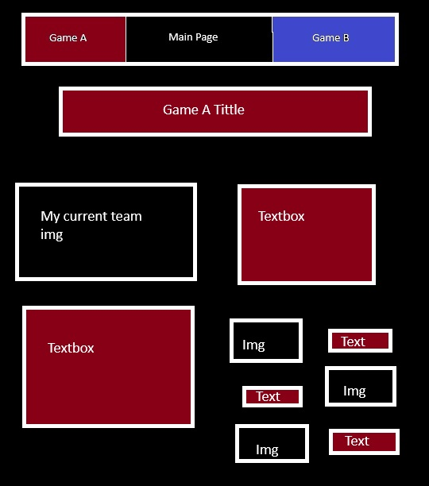
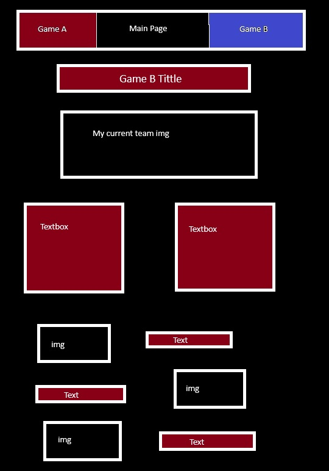
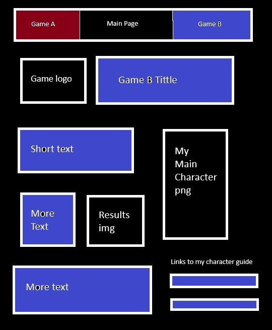
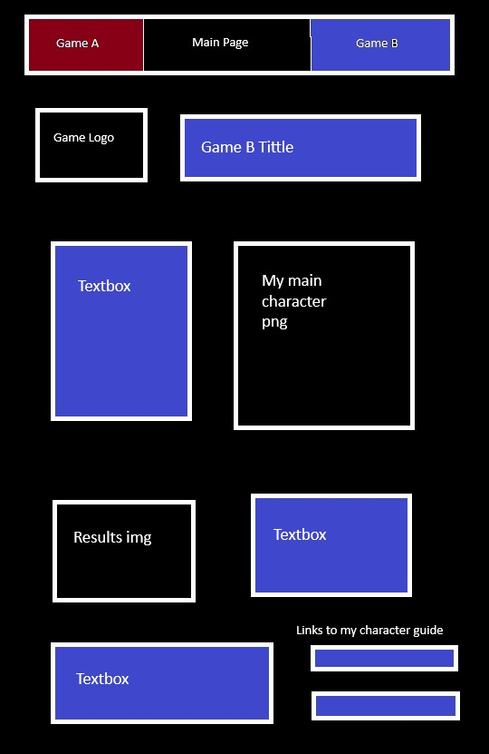

Name
Two of my Favorite Games of All Time
Site Purpose:
Show case my two of my all time favorite games and encourage other gamers to try them.
Escenarios
The users entering this page will enter here after I shared the link to display and showcase
what I believe to be two great games of all time.
Color Scheme
Main color
Classic choice I like to use. Darkmode user of all my apps.
Secondary Color: Blue
As the name implies, Blazblue has an history with the color blue, and I like it.
Secondary Color: Red
Even tho isn't the most important color in Pokémon Reloaded, it still triggers in my mind when I remember playing it.
Letter's Color
This is gonna help readers and allign with color rules.
Typography
I plan on mainly using Zen Kurenaido as the font due to both games being heavily correlated with
japanese culture, as both franchise originated in japan. The japanese looking font will play with it.
Wireframes
Main Page
Wide view

Phone view

Game A: Pokémon Reloaded
Wide View

Phone View

Game B: Blazblue: Central Fiction
Wide View

Phone View
